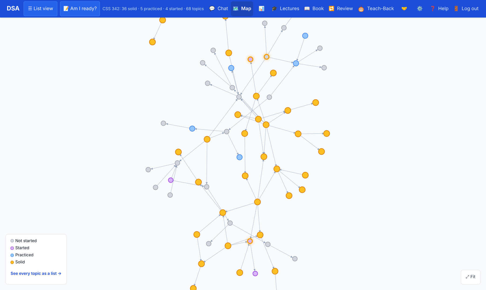
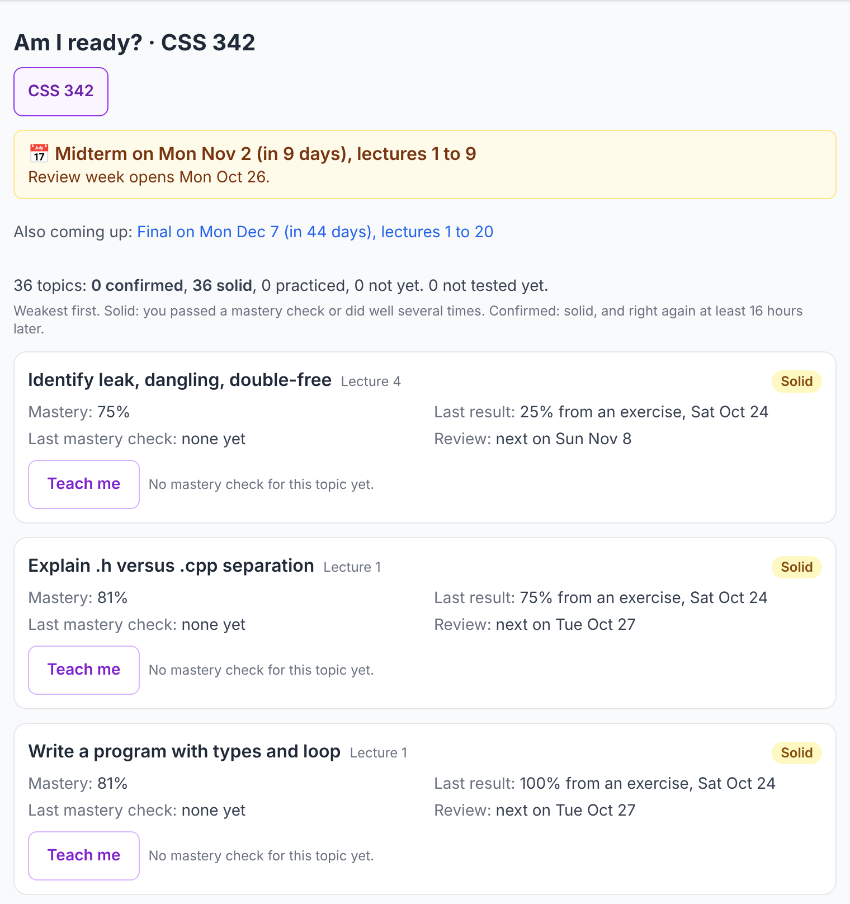

DSA · Digital Student Assistant
Hints, Not Answers
A course tutor that makes students do the thinking,
and shows you what they have learned
Yusuf Pisan
University of Washington Bothell, Computing & Software Systems
pisan@uw.edu · digital-student-assistant.com
Three audiences, one deck
What this talk covers
For faculty
What the tutor does for students, the learning science behind each feature, what you see as the instructor, and how much work it is.
For administration
Cost, privacy, academic integrity, and what it would take to support more courses.
For other universities
What is general and what is built per course, what adoption elsewhere needs, and where it sits among the alternatives.
The last part of Part 1 is what we do not know yet. Please hold me to it.
Part 1
For faculty
What it does for your students, and what it does for you.
The problem
Your students already have an AI tutor. It does their homework.
They ask for answers
~47%
of students' conversations with Claude were direct requests for answers or finished work. Computer science was 38.6% of all students' conversations, against 5.4% of US degrees.
Anthropic Education Report (2025)
Answers can lower exam scores
−17%
on the unassisted exam for students given unrestricted GPT-4, against no AI. A version that gave hints instead scored about the same as no AI.
Bastani et al. (2025), PNAS, about 1,000 high-school students
A prompt alone leaks
22%–53%
CS50's duck put code blocks in about 22% of replies despite a no-solutions prompt; CodeAid's "help write code" gave an exact solution in 53% of sampled cases.
Liu et al. (SIGCSE 2025); Kazemitabaar et al. (CHI 2024)
And too strict fails too: students route around a tutor that only ever asks questions (the assistance dilemma, Koedinger & Aleven 2007).
What DSA is
A tutor built from your course, that will not do the homework

The course tutor for CSS 342 and 343, our C++ data structures sequence, in production with students since a June 2026 pilot.
Three ideas
- Hints, enforced. Code, not the model, decides how much help a reply may give.
- Built from your course. Your slides, recordings, textbook and assignments.
- Help follows evidence. Graded practice decides how much scaffolding a topic gets.
Idea 1 · hints, enforced
Asking for the answer does not unlock it
- Before the model writes a word, ordinary code sets a ceiling on this ladder for the turn, from what the student has shown on graded work.
- Every reply is checked: long code is cut automatically, and a second model reviews risky replies and can rewrite or block them.
- Pushing, pleading or "ignore your instructions" never raises the ceiling. It holds, warmly, and says why.
Graduated help as a designed object: Aleven et al. (2003). Why a prompt alone is not enough: the leakage results on the previous slide.
Idea 1, continued
Elicit first. Tell when eliciting stops paying off.
Your guess first
When there is an answer to find (a complexity, a base case, the buggy line), the tutor asks for the student's guess before it confirms or corrects.
Productive failure: Sinha & Kapur (2021)
Predict before it explains
On a topic with no evidence yet, it may first ask one quick prediction question, then answer at the level the new evidence sets.
Attempt before explanation: Kumar et al. (AIED 2025)
Stuck? One more step
A sustained impasse, or a press of Show me more, raises help one level, at most to pseudocode. Escalated replies are always reviewed. Never the full solution.
Escalate rather than re-ask: Ahtisham et al. (2026, preprint)
Why the escape valve matters: students who cannot get unstuck leave for an unguarded chatbot. A logged way to get more keeps them inside a tool you can see, and shows you who needs a person.
Idea 2 · built from your course
It teaches from your materials, beside your slides
Your materials
Slides, lecture recordings (transcribed), the textbook, assignments, your course repos and your own Discord posts. Exams are never read, and anything named like a solution or answer key is hidden from the tutor.
Slides beside the chat
When the answer is on a slide, the slide opens next to the conversation. Every lecture also exists as a narrated deck and a book chapter.
Class materials, live
Upload a syllabus, reading or assignment and the tutor can use it at once, only for your class. Tick graded and any matching question is always reviewed and never escalated.
A goal graph and practice bank
Each course has a map of learning goals with prerequisites, exercises, mastery questions with rubrics, and short programs with one bug each.
For CSS 342 and 343: 40 lecture decks, 136 learning goals and over 200 exercises, generated from my materials.
Idea 3 · help follows evidence
Only graded work moves a student's level

- Evidence comes from mastery checks, exercises, reviews, quick checks, Find my bug and Teach-Back. Chatting never changes a level.
- Less shown means more scaffolding (up to a worked example on a different problem); more shown means a pointer or a question.
- Levels decay with time; "confirmed" needs a second success at least 16 hours later.
Worked examples help novices and fade for experts: Kalyuga et al. (2003). Spacing: FSRS-4.5 scheduler.
Practice that counts
Each practice mode comes from a result in the literature
| Mode | What the student does | Behind it |
|---|---|---|
| Mastery check | Three questions on a prerequisite before going deeper; two of three passes. A miss shows the key idea and offers Teach me. | Mastery learning; VanLehn (2011) |
| Spaced review | One question at a time on topics answered before, scheduled to come back just before they fade. | Retrieval practice: Roediger & Karpicke (2006) |
| Quick check | One or two questions the system offers after a failed exercise or a mostly watched lecture. | Students skip optional help: Nie et al. (2025) |
| Find my bug | A short program with exactly one bug: name the line, why, and the fix. Every item is verified by compiling and testing it. | Diagnosing errors: Daheim et al. (2024) |
| Teach-Back | The student explains; a second character, Kit, keeps asking why and what if, from recall to analysis. | Learning by teaching: Jin et al. (CHI 2024) |
| Reflection | After a success: "In one sentence, what would you tell a classmate?" | Self-explanation: Bisra et al. (2018) |
Exams
It knows when your exam is, and what is on it
- You enter the exam's date, lecture range and format. The tutor knows it, and the student's panel counts down to it.
- Am I ready? lists the exam's topics weakest first, with Teach me, Quick check and Test me now.
- Review week: in the days before the exam, a code-free question on topics the student has already mastered can get a worked example, and the tutor may confirm their answer.
Not built yet: a practice-exam mode with exam-shaped items.

Keeping them coming back
Change the voice, never the teaching
Characters
Fourteen voices, from a pirate to a grumpy Unix greybeard. The snark lands on the code, never the student, and steps aside on escalated and exam turns.
Interests
Up to three picks from a fixed list (no free text, nothing sensitive), used now and then for an example.
Reply language
Seven languages for the tutor's replies; the course stays in English.
Your voice
A reply can be read aloud in the instructor's cloned voice, only ever the student's own replies.
And people
- Ask my instructor: emails you the conversation, with the student in copy. Three a day.
- Study together: two classmates ask the tutor jointly, at the stricter of their two help levels.
- QSC tutors: a Quantitative Skills Center tutor you add can study with one student.
What you see
Your class on one page, and a weekly email

- Who needs a look: active, went quiet, never started, could not sign in.
- Replies students flagged as wrong, each one link from the transcript.
- The roster, least active first; open any student's progress and conversations, or view the app as them, read-only.
- Sunday email: who used it, the hardest topics (only those two or more students struggled with), and flagged replies.
- Exports of topic levels by student, as CSV.
"This is engagement, not a grade." Nothing here grades students unless you run a graded Teach-Back round.
A demo class on a local copy; every name and number is made up.
What it asks of you
You run your class. I build the course.
You decide
- The roster: paste addresses or import a Canvas class list (only addresses leave your computer)
- Exam dates and ranges, and the review window
- Class materials, and which are graded
- Graded Teach-Back rounds: when, which topics, and when results are released
- Co-instructors, QSC tutors, study pairs, the weekly email
Built for you, or fixed
- Turning your materials into a course: decks, goal graph, exercises, mastery questions. A pipeline I run, then you review
- The help ladder and its bands are code, the same for every class
- The tutor speaks as "Prof. Pisan's tutor" today; a per-course instructor line is on the roadmap
A separate talk, Put Your Course on DSA, walks through the build with CSS 430 as the example.
Honest limits
What the evidence says, and what we do not know yet
What the literature supports
Guarded, hint-giving tutors mostly remove the harm of unrestricted AI; they rarely beat no AI by much. Pooled across studies with an unassisted test, budget about 0.2 SD, not two sigma.
Bastani et al. (2025); Contractor & Reyes (2026, working paper)
Gains, where they appear, come from structure: diagnosis, timing, curriculum, practice. That is what DSA is built around.
What we have not shown
- DSA has not been tested in a controlled study. No randomized comparison yet.
- Its safety checks are tested with scripted and simulated students, not human-labelled transcripts.
- Mastery checks are unproctored, and nothing stops a student opening another chatbot in another tab.
- Most practice features shipped in October 2026.
If you adopt it, I would like to run the study with you.
Part 2
For administration
Cost, privacy, academic integrity, and what it needs to grow.
Cost
Cents per question, with caps at every level
Both from scripted test runs in June 2026, not measured student use.
- Small models supervise: the classifier, strategist and reviewer run on a small model; only the reply uses the larger one.
- Caching: the tutor's long, fixed instructions are cached between turns.
- Free paths: pre-written Teach me explanations need no model call.
Caps and who pays
- A daily question limit per student, and a class-wide monthly cap, with optional exam-week values.
- Per-student day, week and month budgets; students see "about N questions left", never dollars.
- Who pays, in order: the site, then an instructor's own key for their class, then a student's own key. Every refusal says when it lifts.
- The first stop at the monthly cap emails the alert list.
Privacy
FERPA applies, and students hold the controls
- Consent notice on the sign-in page, wording approved by the department.
- Course-tool use only. Any research analysis needs an IRB determination first.
- Practice is never graded. Data is never sold or shared outside the course.
- One year, then anonymized: a daily sweep removes identifiers and free text.
- Self-service: students download all their data, or delete their account, from Settings.
- Activity records (pages, clicks, time on slides) carry ids and counts, never what a student typed. Conversations are stored, and the class's instructors can read them.
- Canvas: rosters come from a class list read in the instructor's browser. No grades in or out, no Canvas tokens.
- Model provider: no training on the data is requested, under the API terms.
- Encrypted backups, nightly, kept up to five weeks.
Open item: a UW Privacy Office review of the hosting and vendor terms.
Academic integrity
Built so the honest path is the easy one
No solutions
A ceiling set in code, an automatic cut of long code on every reply, and a second model reviewing risky replies. The full-solution rung exists only for an administrator's course-wide "explain mode".
Graded work stays protected
A question matching an instructor's graded assignment is always reviewed and never escalated. While a mastery check or graded round is open, its topics are held.
Exams stay out
The content pipeline never reads an exam. Files named like answer keys, hidden course files and private repositories come in only with explicit consent, and anything named like a solution is hidden from the tutor.
What it cannot do
Stop a student opening an unguarded chatbot. So DSA aims to be the better path: course-specific, a logged way to get more help, and an email to the instructor one click away.
What it needs to grow
Production-grade engineering, run by one person
In place
- Thousands of automated tests, including phone-width, keyboard and screen-reader checks
- Kill switches, a maintenance mode, monitored errors, a tested restore from backup
- Every model call priced and logged
- Three courses in one registry; a new course is a pipeline run, not new code
Not yet
- One maintainer. I am the operator, the developer and the course builder.
- One server. Scaling past one instance needs state moved to the database.
- No LTI yet. A Canvas LTI 1.3 request to UW-IT is drafted.
- No external accessibility audit or VPAT; ADA Title II applies from April 2027.
The asks: an IT and privacy partner, support for an evaluation study, and help keeping it running.
Part 3
For other universities
What travels, what adoption needs, and where it sits.
What travels
The teaching machinery is general. The content is built per course.
In the code
- The supervised turn: the ladder, the checks, the review
- The learner model, spaced review, quick checks
- Teach-Back, which reads code but never runs it
- Classes, rosters, exams, materials, the dashboard
- Data rights, characters, pair study
Built by the pipeline
- The knowledge base from the course's materials
- A 20-lecture plan, decks and narration
- The goal graph, exercises, mastery questions
- Find-my-bug items (C++ only today)
Would need work
- One instructor's persona and voice
- A sandbox that compiles C++ only
- UW sign-in, rosters and consent text
- Anthropic models only
Where it sits
What is out there, and what DSA combines
| Kind | Examples | Strength, and the gap |
|---|---|---|
| Study modes | ChatGPT Study Mode, Claude Learning mode, Gemini Guided Learning | Cheap and everywhere. The student can switch the mode off; no instructor can enforce it. |
| LMS AI | Canvas's AI features | Inside the LMS students already use. General purpose, not built from one course. |
| CS courseware | zyBooks, Codio, PrairieLearn | Enforced hints or code execution, on the vendor's content. |
| University-built | CS50's duck, Berkeley 61A's bot | Proven at scale in intro courses; withholding mostly by prompt. |
The combination we have not found elsewhere: the instructor's own materials and voice, withholding enforced by the system, mastery evidence, and upper-division CS.
Adopting it elsewhere
Ready for design partners, not yet for procurement
Now: a hosted pilot
One instructor, one course, one quarter. You send your materials and dates; I build the course and run it; we look at the evidence together.
Before a campus purchase
- LTI 1.3 and institutional sign-in
- More than one institution per deployment
- An accessibility audit and VPAT; security and privacy paperwork
- Self-serve course setup, and more languages than C++
- A quarter of outcome data
The ask
Try it with one course, and help me measure it
Pilot a course
Send your slides, recordings and assignments. We build it together; you run your class with it next quarter.
Partner on support
A privacy review, an IT contact for LTI, and a home for it beyond one faculty member.
Design the study
An unassisted, delayed outcome measure, in a course where the stakes are real.
Yusuf Pisan · pisan@uw.edu · digital-student-assistant.com/instructors
Questions
Yusuf Pisan
pisan@uw.edu
Slides at pisanorg.github.io/yusuf/talks/202610DSA-ForFaculty